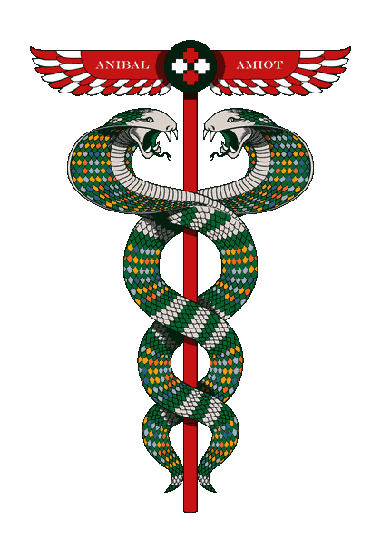

La Livrée d'Hermès — 111ページの論考
La Livrée d'Hermès は哲学と数学の本で、下のリンクから自由に読めます。魔方陣の構成と、それをジャカード織に写すことが中心です。
サイトの新着：用語集でプロジェクトの鍵概念を知るか、取り組みを広げる記事（フランス語）をお読みください。サイトのツールすべてと論考も、一か所でご覧いただけます。
本
本論考はフランス語、英語、スペイン語、タイ語で刊行されています。本サイトでは簡体字中国語、ロシア語、ポルトガル語、ヒンディー語でも読めます。ドイツ語、イタリア語、日本語版は準備中です。本サイトには、トップページ、論考のページ、用語集、ツールのページ、支援のページがフランス語、英語、スペイン語、タイ語、簡体字中国語、ロシア語、ポルトガル語、ヒンディー語、ドイツ語、イタリア語、日本語で、研究成果の一覧がフランス語、英語、簡体字中国語、ロシア語、ポルトガル語、ヒンディー語、ドイツ語、イタリア語、日本語で、全64卦がフランス語、英語、スペイン語、タイ語、ドイツ語、イタリア語、日本語で、記事、256件のパターンのページがフランス語、英語であります。
盤面
00 → 63占い
易経は、占いとして使える知恵の書です。具体的な問いがあれば、押す前にそれを心に収めてください。特に問いがなければ、結果はそのときの状況を示します。複数の問いのために何度か続けて占うこともできますが、一度の結果だけでも、あなたの相談に対応するメッセージとして十分です。
卦と、対応する象の意味をただ探ってみたいなら、盤面のマスを直接選んでください。象について詳しくは、遠慮なく本をお読みください。
6つの位置の意味（下から上へ）

易経の占いは無料で、オンラインで、登録なしで使えます。「硬貨を投げる（6つの爻）」を押すと、六回の投擲が、初爻（下）から上爻（上）まで一つの卦を描きます。各爻は陰か陽、不変か変爻です。結果には、引いた卦の文王の番号、続いてサイトの番号、名前、卦辞と象、二つの八卦、対応する魔方陣が表示されます。変爻ごとに、その爻の解説も表示されます。六つの爻すべての解説は、「この卦についてさらに」のリンクから開く卦のページで読めます。六十四の盤面から卦を直接クリックすることもできます。六十四卦のテキストは Word 文書としてもダウンロードできます（「易経の翻訳をダウンロード」）。
Comment lire un tirage du Yi King
Ce qu’est un tirage
Un tirage donne six traits, posés de bas en haut. Chaque trait est yin (brisé) ou yang (plein), et les six ensemble forment un hexagramme, l’un des 64.
Comment la page fait le tirage
La page lance trois pièces pour chaque trait, six fois de suite ; le premier lancer fait le trait du bas. Chaque pièce vaut 2 ou 3 à égalité de chances, tirée par le générateur pseudo-aléatoire du navigateur (Math.random).
La somme des trois pièces donne le trait : 6, yin mutant ; 7, yang fixe ; 8, yin fixe ; 9, yang mutant. Les chances sont de 1 sur 8 pour le 6, de 3 sur 8 pour le 7, de 3 sur 8 pour le 8 et de 1 sur 8 pour le 9 : un trait sur quatre est mutant.
Ce que contient le résultat
Le résultat donne le numéro traditionnel King Wen de l’hexagramme, puis son numéro dans l’ordre chronologique du site (de 0 à 63), son nom, ses six traits, le pavage du carré magique qui lui correspond, ses deux trigrammes, son image et son jugement. Le lien « En savoir plus sur cet hexagramme » ouvre la page de l’hexagramme tiré. La liste des 64 hexagrammes met les deux numéros côte à côte.
Traits mutants et second hexagramme
Un trait qui sort 6 ou 9 est mutant : la page le marque. Elle montre alors l’hexagramme antérieur (le tirage) et l’hexagramme postérieur, où chaque trait mutant est inversé (le yin devient yang, le yang devient yin), avec la position et le commentaire de chaque trait mutant. Sans trait mutant, il n’y a qu’un hexagramme. Les commentaires des six traits se lisent sur la page de l’hexagramme.
Lire sans se précipiter
- Lire le jugement.
- Lire l’image.
- Regarder le carré dans le livre, au passage que la page de l’hexagramme indique.
Ce qui reste sur l’appareil
Le tirage se calcule dans votre navigateur, sans compte. La page ne garde aucun historique de tirages : elle ne mémorise sur l’appareil que des réglages d’affichage (langue, palette). Le résultat s’écrit dans l’adresse de la page (?tire=…), ce qui permet d’en copier le lien.
Le site est d’Anibal Edelberto Amiot（フランス語）, sous licence CC BY-NC 4.0.
Pour aller plus loin
- Les 64 hexagrammes, avec leurs deux numéros
- Le livre La Livrée d’Hermès
- Le lexique du projet